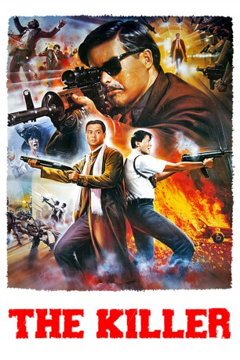

#5298 The Killer
 
 IMDB-Wertung: 7.9 / 10
IMDB-Wertung: 7.9 / 10  Metascore: 0
Metascore: 0 
Hong Kong-Actionthriller von Regisseur John Woo. Der Profikiller Ah Jong (Yun-Fat Chow) will eigentlich in den Ruhestand gehen. Doch bei einem Auftrag verletzt er aus Versehen die Sängerin Jennie (Sally Yeh), die fortan blind ist. Er nimmt noch einen letzten Job an, um eine OP für die Erblindete zu stiften. Doch der Auftraggeber will nicht zahlen. Auch die Polizei ist inzwischen auf seiner Spur.
Jahr: 1989
Dauer: 111 Minuten
FSK: BPjM Restricted
Land: Hong-Kong Studio: Astro DistributionTonspuren:
Untertitel:
Auflösung: 1080p (1920x1040) Größe: 8949 MB
Genre: Action, Thriller, Drama, Krimi
Regisseur:  John Woo
John Woo
Drehbuch: Development Company for Television Program (DCTP)
Soundtrack:
Darsteller:
 Yun-Fat Chow als Ah Jong
Yun-Fat Chow als Ah Jong- Sally Yeh als Jennie
 Kenneth Tsang als Sgt. Tsang Yeh
Kenneth Tsang als Sgt. Tsang Yeh Danny Lee als Insp. Li Ying / Little Eagle
Danny Lee als Insp. Li Ying / Little Eagle- Kong Chu als Fung Sei
 Fui-On Shing als Wong Hoi
Fui-On Shing als Wong Hoi Wing-Cho Yip als Wong Dung-Yu
Wing-Cho Yip als Wong Dung-Yu- Fan Wei Yee als Paul Yau
- Barry Wong als Chief Insp. Dou / Tu
- Parkman Wong als Insp. Chan Bok
- Siu-Hung Ng als A Killer
- Yamson Domingo als Bodyguard A
- Siu Hung Ngan als Bodyguard B
- Kwong Leung Wong als Wong Tong
- Simon Broad als Ah Jong , uncredited
 Dion Lam als Wong Hoi's Thug , uncredited
Dion Lam als Wong Hoi's Thug , uncredited- Chung Lin als Jueng Wan / Ah Jong's First Victim , uncredited
- Hung Lu als ReviewBboard Officer , uncredited
- Danny Ng als Frank's Killer , uncredited
- Pierre Tremblay als Wong Hoi , uncredited
Datei: X:\FSK18-Eastern\Killer, The (1989, FSKBPjM Restricted, 1920x1040).mkv seit 11.01.2017
Festplatte: FSK18
 Es gibt insgesamt 102 Filme in der Gruppe 'FSK18-Eastern'
Es gibt insgesamt 102 Filme in der Gruppe 'FSK18-Eastern'